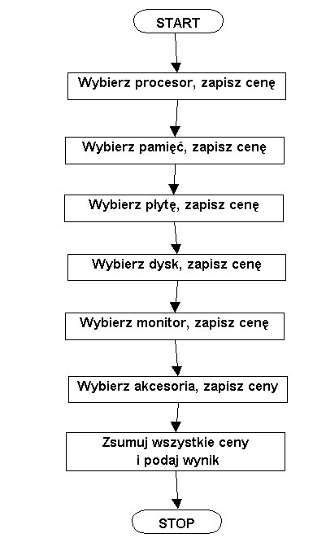
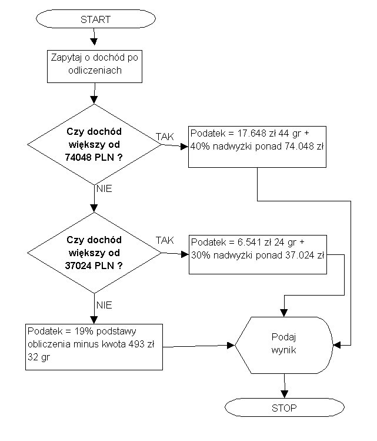
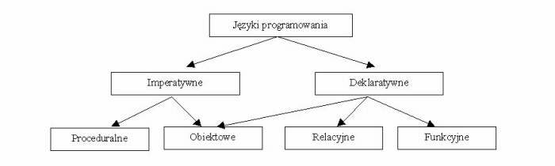
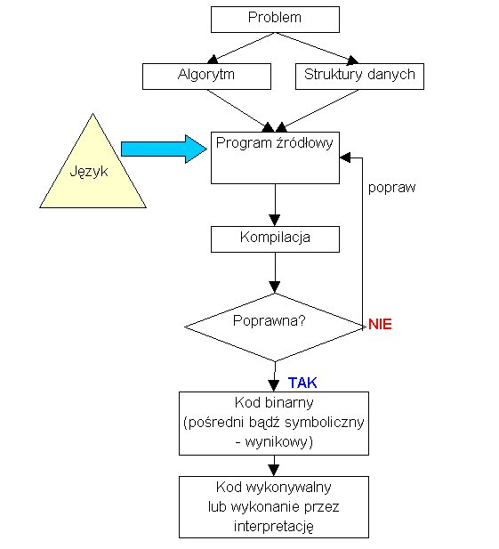

2. Algorytmy i jêzyki programowania
Instrukcje zapisane w programie powinny ³±cznie realizowaæ jakie¶ zadanie,
rozwi±zywaæ jaki¶ problem. Jest oczywi¶cie mo¿liwe napisanie programu,
który sk³ada siê z jakich¶ przypadkowych instrukcji, ale nie ma w tym za
wiele sensu.
Powinni¶my zatem spojrzeæ na pojêcie programu z innego (ni¿ "techniczny",
zwi±zany z wykonywaniem przez procesor instrukcji) punktu widzenia.
Skoro programy s³u¿± do rozwi±zywania jakich¶ problemów, realizacji zadañ, to punktem wyj¶cia programowania
powinno byæ sformu³owanie problemu lub zadania, sposobu jego rozwi±zania,
kroków prowadz±cych do realizacji celu. Innymi s³owy - sformu³owanie
algorytmu rozwi±zania problemu lub wykonania zadania.
ALGORYTM to przepis postêpowania prowadz±cy
do rozwi±zania okre¶lonego zadania; zbiór poleceñ dotycz±cych pewnych obiektów
(danych) - ze wskazaniem kolejno¶ci, w jakiej maj± byæ wykonane; wykonawc±
jest uk³ad, który na sygna³y reprezentuj±ce polecenia reaguje ich realizowaniem
- mo¿e nim byæ cz³owiek lub urz±dzenie automatyczne, np. komputer.
( ¼ród³o: Encyklopedia PWN)
Algorytmy mo¿emy wyraziæ w ró¿ny sposób: w jêzyku naturalnym, graficznie
- w postaci schematu blokowego lub te¿ w tzw. pseudo-kodzie (wybranym
jêzyku opisu algorytmów, który jest niezale¿ny od konkretnych, dostêpnych
jêzyków programowania).
Wyobra¼my sobie np., ¿e zamierzamy kupiæ nowy komputer i stoi przed
nami zadanie skonfigurowania go i policzenia ca³kowitej ceny (wg dostêpnego
cennika czê¶ci).
W pierwszym przybli¿eniu najprostszy algorytm realizacji tego zadania
mo¿emy opisaæ w kolejnych krokach
- Wybierz z cennika procesor, zapisz jego cenê
- Wybierz z cennika pamiêæ RAM, zapisz jej cenê
- Wybierz z cennika p³ytê g³ówn±, zapisz jej cenê
- Wybierz z cennika kartê graficzn±, zapisz jej cenê
- Wybierz z cennika dysk twardy, zapisz jego cenê
- Wybierz z cennika CDROM lub DVD, zapisz jego cene
- Wybierz z cennika kartê d¼wiêkow±, zapisz jej cenê
- Wybierz obudowê i potrzebne akcesoria, zapisz ich ceny
- Zsumuj wszystkie ceny
Jest to zapis w jêzyku naturalnym. Graficznie algorytm ten (z pewnymi
skrótami, ale bez zmniejszenia ogólno¶ci) mogliby¶my przedstawiæ w nastêpuj±cy
sposób.

Widzimy tu ¶ci¶le okre¶lon± sekwencjê kolejnych kroków Algorytm ma swój
pocz±tek, jego wykonalno¶æ i zakoñczenie pracy s± gwarantowane, mo¿e byæ
tak¿e wykonywany wielokrotnie, z ró¿nymi danymi - w naszym przypadku ró¿nymi
opcjami, dotycz±cymi konfiguracji komputera.
Ten algorytm jest dla nas zrozumia³y. Potrafimy go wykonaæ, choæby z
o³ówkiem i kartk± papieru.
Powstaje pytanie, w jaki sposób zadanie wyliczenia ceny mo¿na powierzyæ
komputerowi?
Oczywi¶cie, domy¶lamy siê, ¿e algorytm nale¿y zapisaæ w jakim¶ jêzyku
programowania (otrzymamy wtedy program w postaci ¼ród³owej), przet³umaczyæ
na jêzyk zrozumia³y dla procesora ( program w postaci wykonywalnej
), nastêpnie ten "wykonywalny" program uruchomiæ.
Od razu jednak natkniemy siê na pewien podstawowy problem: co tak naprawdê
znaczy sformu³owanie "wybierz ..., zapisz cenê."; kogo ma dotyczyæ ta sekwencja
instrukcji do wykonania - tylko komputera, czy równie¿ nas samych - jako
u¿ytkowników programu realizuj±cego dany algorytm?
Skoro na podstawie algorytmu mamy stworzyæ program, a program ma byæ
wykonywany przez komputer, to algorytm powinni¶my formu³owaæ w kategoriach
czynno¶ci wykonywanych przez komputer.
Zauwa¿my wiêc, ¿e w ogólnym sensie omawiany algorytm realizuje przetwarzanie
jakich¶ danych wej¶ciowych (podawanych przez u¿ytkownika) w
dane wyj¶ciowe (wynik dzia³ania algorytmu).
Musimy sprecyzowaæ: jakie dane i kiedy ma podawaæ u¿ytkownik i co z tymi
danymi ma robiæ komputer.
Mamy co najmniej trzy mo¿liwo¶ci:
- u¿ytkownik podaje konkretne ceny, program wylicza ich sumê;
- u¿ytkownik podaje charakterystyki sk³adników, program odszukuje np.
w jakiej¶ internetowej bazie danych ich ceny i sumuje je;
- u¿ytkownik podaje kryteria wyboru konfiguracji sprzêtowej, program
wed³ug tych kryteriów dokonuje wyboru konkretnych opcji sprzêtowych i sumuje
ich ceny.
W pierwszym przypadku nasz algorytm tylko nieco siê zmieni. Pamiêtajmy:
formu³ujemy go w kategoriach czynno¶ci wykonywanych przez komputer.
1. Zapytaj u¿ytkownika o cenê procesora
2. Zapytaj u¿ytkownika o cenê p³yty g³ównej
...
n-1. Zsumuj podane ceny
n. Podaj u¿ytkownikowi wynik (cenê komputera)
Inne, przedstawione wy¿ej przypadki, prowadz± do algorytmów znacznie
bardziej skomplikowanych.
Zauwa¿my jeszcze, ¿e ten prosty algorytm ma bardzo ogóln± postaæ. Prze³o¿enie
go na jaki¶ jêzyk programowania wymaga podjêcia wielu decyzji, np.
- w jaki sposób ma odbywaæ siê interakcja z u¿ytkownikiem: w jaki sposób
pytaæ go o dane wej¶ciowe i jak pokazywaæ wynik (dane wyj¶ciowe) ?
- w jaki sposób wykonywaæ sumowanie: czy przechowywaæ ceny poszczególnych
sk³adników, czy sk³adaæ je inkrementalnie maj±c na wyj¶ciu do dyspozycji
tylko wynikow±, sumaryczn± cenê?
- w jaki sposób reagowaæ na b³êdy danych ?
Decyzje te dotycz± zaprojektowania tzw. interfejsu u¿ytkownika
(czyli sposobu komunikowania siê programu z u¿ytkownikiem) oraz przemy¶lenia
struktury algorytmu pod wzglêdem odporno¶ci na b³êdy i ³atwo¶ci
modyfikacji. Np. w naszym algorytmie powinni¶my sprawdzaæ, czy u¿ytkownik
nie wprowadzi³ czasem danych, które nie s± liczb± i zastanowiæ siê, czy
nie przechowywaæ cen poszczególnych sk³adników komputera, bo byæ mo¿e za
jaki¶ czas zmienimy zestaw danych wyj¶ciowych i bêdziemy chcieli pokazaæ
u¿ytkownikowi "raport z obliczeñ", przedstawiaj±cy, oprócz sumarycznej ceny,
ceny poszczególnych sk³adników, a mo¿e nawet ich procentowy udzia³ w ³±cznym
koszcie.
Ju¿ tylko reagowanie na b³êdy danych zmieni sekwencjê kroków
naszego algorytmu.
Zazwyczaj zreszt± rozwi±zanie jakiego¶ problemu lub wykonanie jakiego¶
zadania wymaga - oprócz jakich¶ prostych sekwencji kroków: :
- sprawdzania jakich¶ warunków i na tej podstawie podejmowania decyzji
o wyborze dalszych kroków algorytmu
- iteracyjnego wykonania jakich¶ fragmentów algorytmu (powtarzania
ich wykonania wielokrotnie, zadan± liczbê razy lub dopóki spe³nione sa
jakie¶ warunki)
Uwzglêdniaj±c mo¿liwe b³êdy przy podawaniu danych przez u¿ytkownika oraz
potrzebê przechowywania danych o podanych cenach sk³adników, algorytm
wyliczenia ceny komputera mo¿e wygl±dac tak:
1. Zapytaj u¿ytkownika o cenê procesora
2. Je¿eli podana cena nie jest liczb±,
powiadom u¿ytkownika o b³êdzie
i wróæ do kroku 1
3. Zapisz cenê procesora (do ew. pó¼niejszego u¿ycia)
4. Zapytaj u¿ytkownika o cenê p³yty g³ównej
5. Je¿eli podana cena nie jest liczb±,
powiadom u¿ytkownika o b³êdzie
i wróæ do kroku 4
6. Zapisz cenê p³yty g³ównej (do ew. pó¼niejszego u¿ycia)
... inne sk³adniki
... inne sk³adniki
n-1. Wylicz sumê cen sk³adników
n. Poka¿ wyniki
Na schematach blokowych podejmowanie decyzji przedstawia siê w postaci rombu.
Przyk³ad: schemat blokowy algorytmu obliczania podatku.

Algorytmy mo¿emy zapisywaæ równie¿ w pseudo-kodzie, czyli skróconej i
do pewnego stopnia sformalizowanej formie jêzyka naturalnego, niezale¿nej
od konkretnego jêzyka programowania. Pseudo-kod jest znacznie bli¿szy
jêzykom programowania ni¿ jêzyk naturalny i ³atwiej jest przek³adaæ go na
program zapisany w konkretnym jêzyku programowania. W ró¿nych podrêcznikach
programowania znale¼æ mo¿na ró¿ne formy pseudo-kodu, sami mo¿emy tak¿e opracowaæ
dla siebie w³asny pseudo-kod.
W pseudo-kodzie mo¿emy pos³ugiwaæ siê pojêciem zmiennej, czyli symbolicznego
oznaczenia danych (wiêcej o pojêciu zmiennej w nastêpnym wyk³adzie; teraz
mo¿emy traktowaæ je nieco podobnie jak w matematyce).
Operacje na zmiennych mo¿emy zapisaæ skrótowo za pomoc± operatorów
czyli symboli dodawania, odejmowania, mno¿enia, porównania itp. (wiêcej
o operatorach w nastêpnym wyk³adzie).
W pseudo-kodzie musz± znajdowaæ siê tak¿e s³owa i wyra¿enia, precyzyjnie okreslaj±ce
znaczenie fragmentów algorytmu (czynno¶ci, instrukcje do wykonania). Np.
podejmowanie decyzji mo¿e byæ zapisane w postaci:
je¿eli (warunek) to ...
albo
je¿eli (warunek) to ...
w przeciwnym razie ...
a pêtle iteracyjne (czyli powtarzanie fragmentów algorytmu):
wykonuj dopóki (warunek) ...
wykonuj zmieniaj±c warto¶æ zmiennej i od p do l ...
Natomiast wprowadzanie i wyprowadzanie danych mo¿na wyraziæ np. za pomoc±
s³ów czytaj, pisz.
U¿ywaj±c symboli +, - i * dla wyra¿enia operacji dodawania, odejmowania i
mno¿enia, nawiasów (jak w matematyce) do grupowania operacji i specjalnych
s³ów dla wyra¿enia czynno¶ci i decyzji, algorytm wyliczenia podatku mo¿emy
teraz zapisaæ jako:
czytaj dochód
je¿eli (dochód > 74048) to podatek = 17048.44 + 0.4 * (dochód - 74048)
w przeciwnym razie je¿eli (dochód > 37024) to
podatek = 6541.24 + 0.3 * (dochód - 37024)
w przeciwnym razie podatek = 0.19 * dochód - 493.32
pisz podatek
Przy zapisie w ten sposób algorytmu obliczenia ceny komputera natkniemy siê
jednak na dwa problemy.
Po pierwsze, b³±d przy wprowadzaniu danych zmienia sekwencjê kroków algorytmu
i powoduje powrót do kroku wczytywania danych. W pseudo-kodzie mogliby¶my to
zapisaæ jako instrukcjê przej¶cia do konkretnego fragmentu algorytmu (
id¿ do ..), oznaczonego jak±¶ etykiet± (etykieta bêdzie s³owem zakoñczonym
dwukropkiem). Przy okazji, wprowadzimy do naszego pseudo-kodu nawiasy klamrowe,
które bêd± grupowaæ czynno¶ci; np. w kontek¶cie:
je¿eli (warunek) to {
czynno¶æ 1
czynno¶æ 2
}
przy zaj¶ciu warunku zostan± wykonane po kolei czynno¶ci podane w nawiasach
klamrowych.
pobieranieDanych1:
pisz "Podaj cenê procesora"
czytaj cenaProcesora
je¿eli (cenaProcesora nie jest liczb±) to {
pisz "Wadliwe dane"
id¼ do pobieranieDanych1
}
pobieranieDanych2:
pisz "Podaj cenê p³yty g³ównej"
czytaj cenaP³yty
je¿eli (cenaP³yty nie jest liczb±) to {
pisz "Wadliwe dane"
id¼ do pobieranieDanych2
}
...
cenaWynikowa = suma cen czê¶ci
pisz cenaWynikowa
Taki sposób zapisu powoduje jednak, ¿e algorytmy (i programy) staj± siê trudno
czytelne, a ich logika zawik³ana i nara¿ona na b³êdy.
Dlatego w wiêkszo¶ci jêzyków programowania nie ma ju¿ instrukcji goto
( id¼ do). Zamiast tego stosowane s± instrukcje iteracyjne. Jest to równie¿
powód dla którego straci³y na popularno¶ci schematy blokowe (okazuje siê
bowiem, ¿e schematy blokowe nie zawsze, a zawsze niezbyt bezpo¶rednio przek³adaj±
siê na "programowanie bez goto").
Algorytm wyliczenia ceny komputera powinni¶my wiêc wyraziæ w inny sposób,
np. wprowadzaj±c zmienn± logiczn± o nazwie trzebaPobraæDane, która mo¿e przyjmowaæ
dwie symboliczne warto¶ci tak i nie, oraz u¿ywaj±c instrukcji
iteracyjnych.
trzebaPobraæDane = tak
wykonuj dopóki (trzebaPobraæDane) {
pisz "Podaj cenê procesora"
czytaj cenaProcesora
je¿eli (cenaProcesora nie jest liczb±) to pisz "Wadliwe dane"
w przeciwnym razie trzebaPobraæDane = nie
}
trzebaPobraæDane = tak
wykonuj dopóki (trzebaPobraæDane) {
pisz "Podaj cenê p³yty g³ównej"
czytaj cenaP³yty
je¿eli (cena
P³yty nie jest liczb±) to pisz "Wadliwe dane"
w przeciwnym razie trzebaPobraæDane = nie
}
...
cenaWynikowa = suma cen czê¶ci
pisz cenaWynikowa
Na pocz±tku zmienna trzebaPobraæDane ma warto¶æ tak i warunek w
wykonuj dopóki jest prawdziwy, zatem rozpoczyna siê wykonanie instrukcji
w nawiasach klamrowych. Je¿eli wprowadzone dane (cenaProcesora) nie s± liczb±,
to wypisywany jest komunikat "Wadliwe dane", warto¶æ zmiennej trzebaPobraæDane
nie zmienia siê i czynno¶ci zapisane w nawiasach klamrowych wykonywane s±
ponownie (bowiem warunek w wykonuj dopóki nadal jest prawdziwy). W
przeciwnym razie (je¶li cenaProcesora jest liczb±), zmienna trzebaPobraæDane
przybiera warto¶æ nie, wobec czego warunek w wykonuj dopóki
przestaje byæ prawdziwy i czynno¶ci w nawiasach klamrowych nie s± kolejny
raz wykonywane, a algorytm kontynuuje dzia³anie od miejsca po zamykaj±cym
nawiasie klamrowym - rozpoczyna pobieranie danych dotycz±cych ceny p³yty
g³ównej.
Drugi problem, zwi±zany z tym algorytmem polega na powielaniu bardzo podobnych
(niemal identycznych) czynno¶ci. Zwróæmy uwagê: pobieranie cen dla procesora,
p³yty, innych komponentów - wygl±da praktycznie tak samo. Mogliby¶my wiêc
wyodrêbniæ te czynno¶ci i zapisaæ je jeden raz w postaci tzw. procedury
lub funkcji, a jednokrotnie zapisane w niej czynno¶ci wykonywaæ
wielokrotnie dla ró¿nych komponentów komputera.
Oznacza to, ¿e dzielimy nasz problem obliczenia ceny komputera na dwa podproblemy:
podproblem wprowadzania i weryfikacji danych oraz g³ówny problem w³a¶ciwych
obliczeñ. Ka¿dy z tych problemów mo¿emy rozwi±zywaæ w du¿ym stopniu niezale¿nie,
skupiaæ siê ka¿dorazowo na specyficznych w danym kontek¶cie cechach.
Ten sposób tworzenia algorytmów i programów nazywa siê programowaniem
strukturalnym.
W nastêpnych wyk³adache poznamy bli¿ej pojêcie funkcji i zastosujemy je w
praktyce.
Podsumujmy:
- programy piszemy po to, by rozwi±zywaæ jakie¶ problemy lub realizowaæ jakie¶ zadania;
- zanim napiszemy program, który realizuje jakie¶ zadanie, musimy opracowaæ
algorytm postêpowania, prowadz±cego do realizacji tego zadania;
- algorytm jest przepisem, zbiorem poleceñ wykonywanych na danych,
opisem sposobu przekszta³cenia danych wej¶ciowych w dane wyj¶ciowe;
- program jest zapisem algorytmu oraz danych w konkretnym jêzyku
programowania;
- po to by program móg³ byæ wykonany przez komputer jego zapis w konktretnym
jêzyku programowania musi byæ przet³umaczony na jêzyk instrukcji rozumianych
przez procesor; takiego t³umaczenia dokonuj± specjalne programy nazywane translatorami,
kompilatorami i interpreterami.
Zwróæmy szczególn± uwagê na to, ¿e w programach nie tylko odzwierciedlamy
kroki ( polecenia, czynno¶ci) algorytmów, ale równie¿ musimy w jaki¶ sposób
przedstawiaæ dane, których czynno¶ci te dotycz±. Dane mog± byæ obrazowane
w ró¿ny sposób - mog± byæ opisywane jako pojedyncze egzamplarze albo jako
zestawy, (powi±zanych i/lub w okreslony sposób uporz±dkowanych) danych. W
tym kontek¶cie mówimy o strukturach danych.
Mo¿emy zatem podaæ inn± od poprzedniej definicjê programu (autorstwa N.
Wirtha).
PROGRAM - to skonkretyzowane sformu³owanie
abstrakcyjnego algorytmu na podstawie okre¶lonej reprezentacji i struktury
danych.
Obie definicje nie s± sprzeczne. Pierwsza, przytoczona na wstêpie tego wyk³adu
("program jako zestaw instrukcji wykonywanych przez procesor") akcentuje
dzia³anie, druga ("program jako konkretny zapis algorytmu") akcentuje tworzenie
programu.
Tekst programu zapisujemy w wybranym jêzyku programowania.
Ka¿dy jêzyk programowania posiada swój alfabet, czyli zbiór znaków
(liter i cyfr) z których mog± byæ konstruowane symbole jêzyka (ci±gi znaków). Regu³y sk³adniowe definiuj± dopuszczalne sposoby tworzenia symboli
oraz dopuszcalne porz±dki ich wystêpowania w programie, za¶ semantyka
jêzyka okresla znaczenie wybranych symboli. Np. w jakim¶ jêzyku programowania
mo¿emy siê pos³ugiwaæ alfabetem sk³adaj±cym siê z liter, cyfr, znaków specjalnych
(alfabet jêzyka); z liter i cyfr mo¿emy tworzyæ nazwy zmiennych, niektóre
ci±gi znaków (np. if ) mog± byæ zarezerwowane i oznaczaj± instrukcje jêzyka,
sposób ³±czenia ze sob± symboli jest okre¶lony (np. napis if (a == b) a =
0; bêdzie poprawny sk³adniowo, a napis if a = b a = 0 bêdzie niepoprawny);
znaczenie ci±gów symboli jest okreslone np. a = 3 oznacza przypisanie zmiennej
a warto¶ci 3).
Istnieje wiele (dziesi±tki tysiêcy) jêzyków programowania. Mo¿na je klasyfikowaæ
wed³ug ró¿nych kryteriów.
Niewatpliwie najwazniejszym jest logiczna struktura jêzyka i sposób tworzenia programów w danym
jêzyku.
Jêzyki imperatywne wymagaj± od programisty wyspecyfikowania konkretnej
sekwencji kroków realizacji zadania, natomiast jêzyki deklaratywne
- opisuj± relacje pomiêdzy danymi w kategoriach funkcji (jêzyki funkcyjne
) lub regu³ (jêzyki relacyjne, jêzyki programowania logicznego
), a wynik dzia³ania programu uzyskiwany jest poprzez zastosowanie wobec
opisanych relacji okre¶lonych gotowych, wbudowanych "w jêzyk" algorytmów. Podej¶cie obiektowe polega przede wszystkim na ³±cznym rozpatrywaniu
danych i mo¿liwych operacji na nich, daj±c mo¿liwo¶æ tworzenia i u¿ywania
w programie nowych typów danych, odzwierciedlaj±cych dziedzinê problemu, programowanie proceduralne (czasami kojarzone z imperatywnym) rozdziela
dane i funkcje i nie dostarcza sposobów prostego adekwatnego odzwierciedlenia
dziedziny rozwi±zywanego problemu w strukturach danych, u¿ywanych w programie.

Przyk³adami jêzyków proceduralnych s±: ALGOL, FORTRAN, PL/I, C. Jêzyki obiektowe
to np. SmallTalk, Java, C++, C#. Najbardziej znanym jêzykiem funkcyjnym jest
Haskell, za¶ jêzykiem programowania logicznego - Prolog.
Inny podzia³ dotyczy sposobu w jaki tekst programu przekszta³cany jest na
instrukcje dla procesora.
Mamy tu podzia³ na jêzyki kompilowane i interpretowane.
Kompilator t³umaczy program ¼ród³owy na instrukcje, które mog±
byæ wykonane przez procesor i jednocze¶nie sprawdza sk³adniow± poprawno¶æ
programu, sygnalizuj±c wszelkie b³êdy. Proces kompilacji jest wiêc nie tylko
porcesem t³umaczenia, ale równie¿ weryfikacji sk³adniowej poprawno¶ci programu.
W jêzykach kompilowanych tekst programu ( program ¼ród³owy)
t³umaczony jest na kod binarny (po¶redni) przez specjalny program
nazywany kompilatorem. Zazwyczaj inny program zwany linkerem
- generuje z kodu po¶redniego gotowy do dzia³ania binarny kod wykonywalny
i zapisuje go na dysku w postaci pliku typu wykonywalnego (np. z rozszrzeniem
EXE lub z nadanym atrybutem "zdolny do wykonywania"). W ten sposób dzia³aj±
takie jêzyki jak C czy C++. Czasem kompilator produkuje symboliczny kod
binarny, który jest wykonywany za pomoc± interpretacji przez program
zwany interpreterem. Tak w³a¶nie dzieje siê w przypadku jêzyka Java.
Interpreter wykonuje bezpo¶rednio tekst programu. Zatem sk³adniowa
poprawno¶æ jest sprawdzana zazwyczaj dopiero w trakcie dzia³ania programu,
aczkolwiek niektóre jêzyki interpretowane udostêpniaj± fazê symbolicznej
kompilacji do kodu po¶redniego, podczas której sprawdzana jest poprawno¶æ
¼ród³a.
W jêzykach interpretowanych kod programu (¼ród³owy lub
po¶redni) jest odczytywany przez specjalny program zwany interpreterem.
który na bie¿±co - w zale¿no¶ci od przeczytanych fragmentów programu - przesy³a
odpowiednie polecenia procesorowi i w ten sposób wykonuje program.
Przyk³adami jêzyków interpretowanych s±: REXX, ObjectREXX, Perl, PHP.
Reasumuj±c, proces programowania mo¿na przedstawiæ na poni¿szym rysunku za pomoc± nastêpuj±cego algorytmu.

|